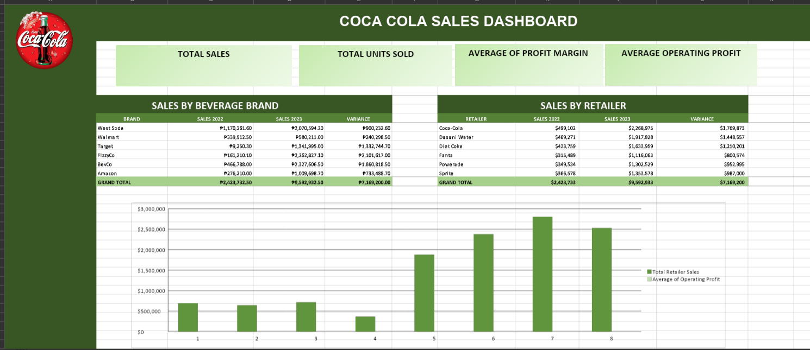

In this task, I created a dashboard in Excel using the "Coca Cola Sales" dataset to visually summarize and analyze sales data, making it easier to understand trends and key insights.
Through this activity, I learned how to effectively visualize data in Excel and create dashboards that provide meaningful insights at a glance.
Back to Projects Show Project